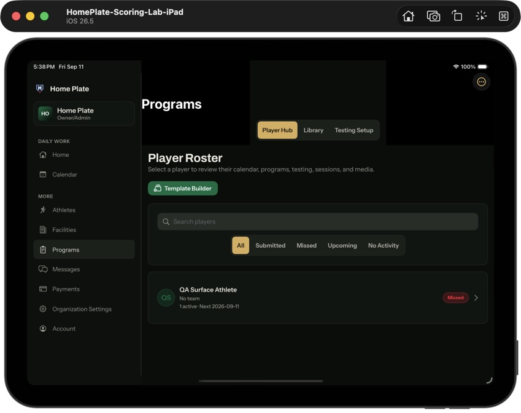
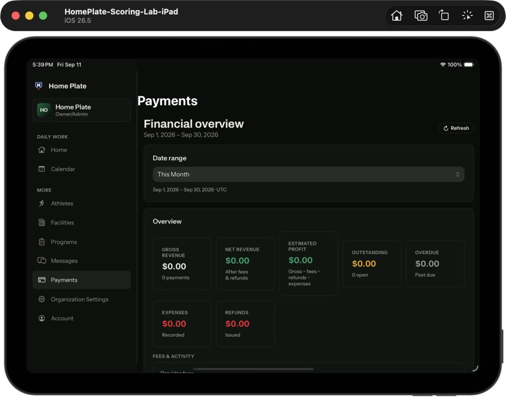
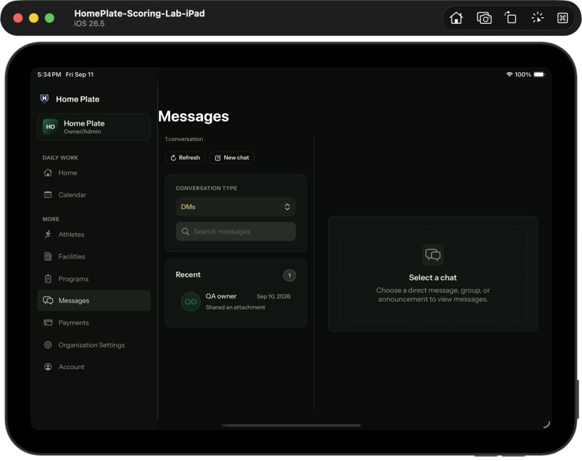
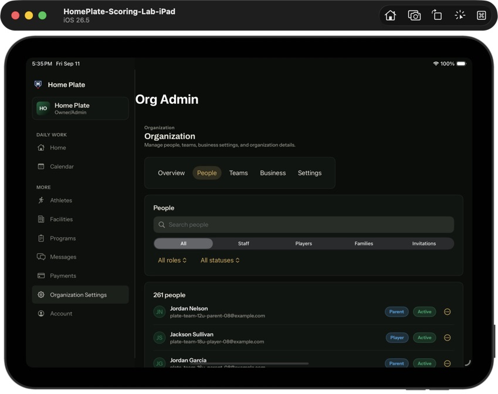
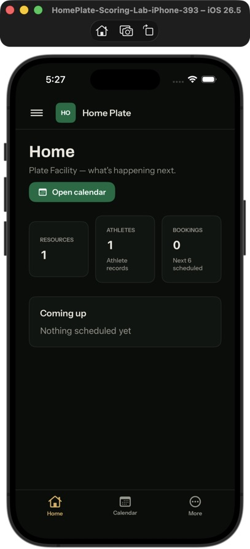
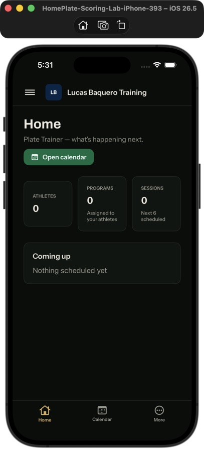
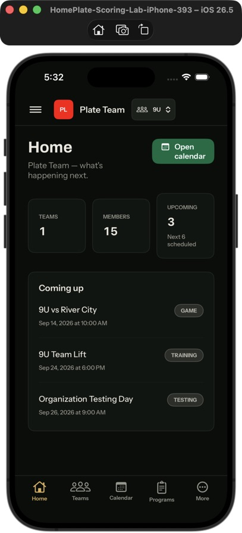
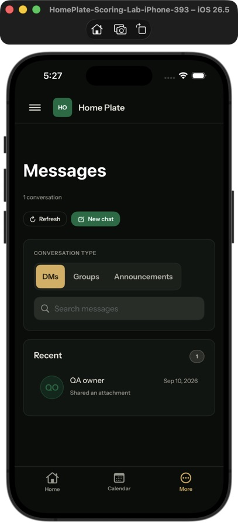
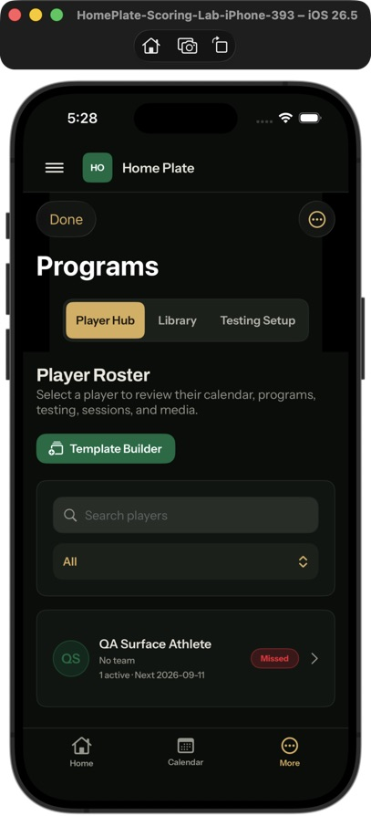
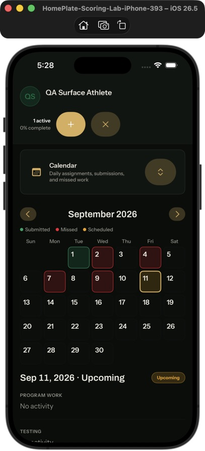
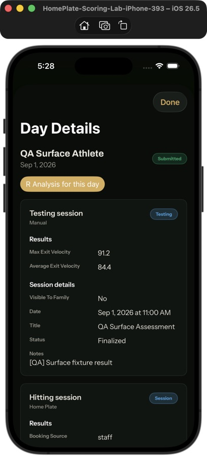
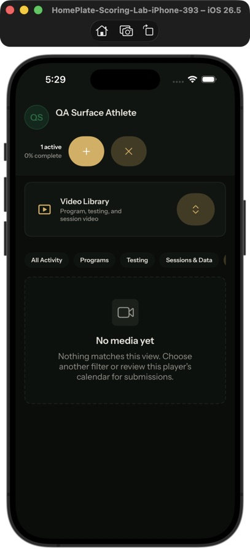
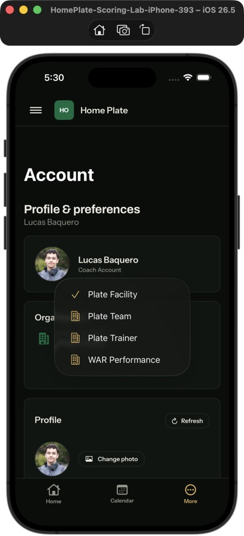
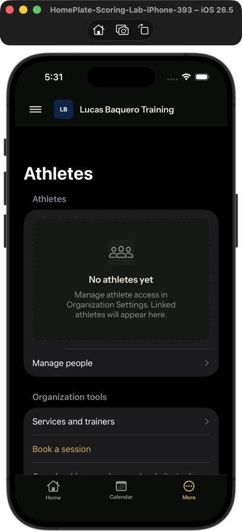
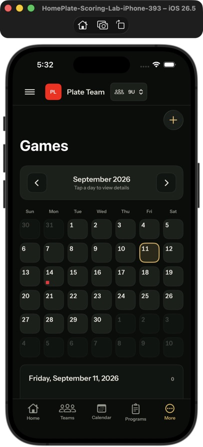
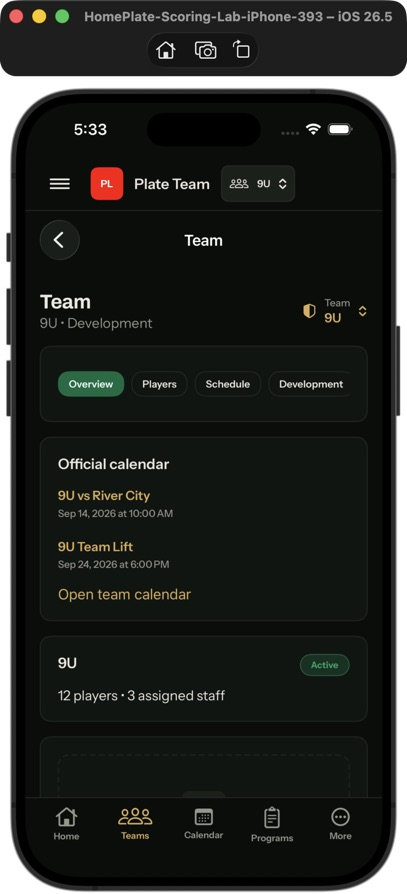
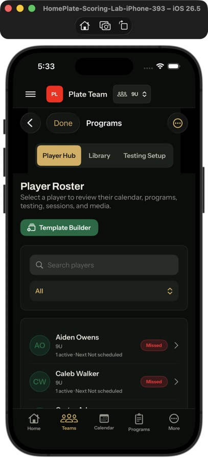
September 11, 2026. Local builds only — no App Store upload.
Representative screenshots, not exhaustive acceptance. Earlier captures precede final minor refinements. Verification report
















